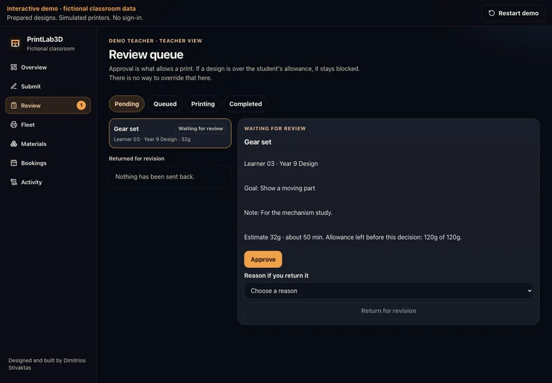

Enlarge screenshot.Source: PrintLab3D
Review a print before approving it
Review a prepared design, its estimated time and material use. Approve it or return it for revision before supervised release.
Teacher control. The teacher makes the decision. Sample designs replace real uploads and slicing in this demonstration.
Open the pending job and choose an approval or revision decision.